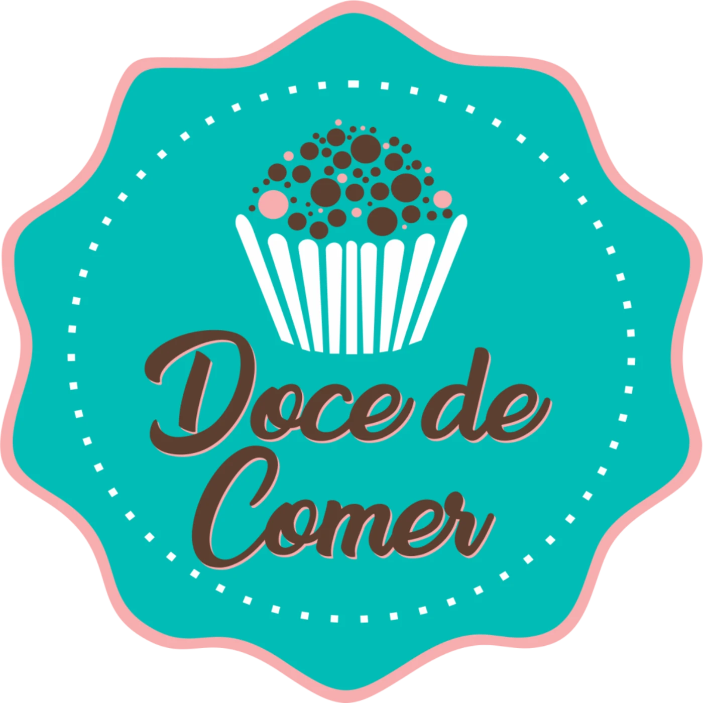
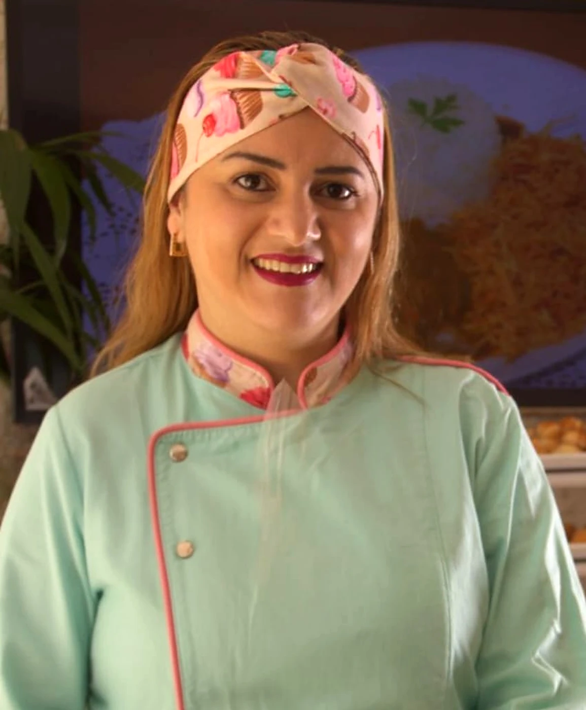
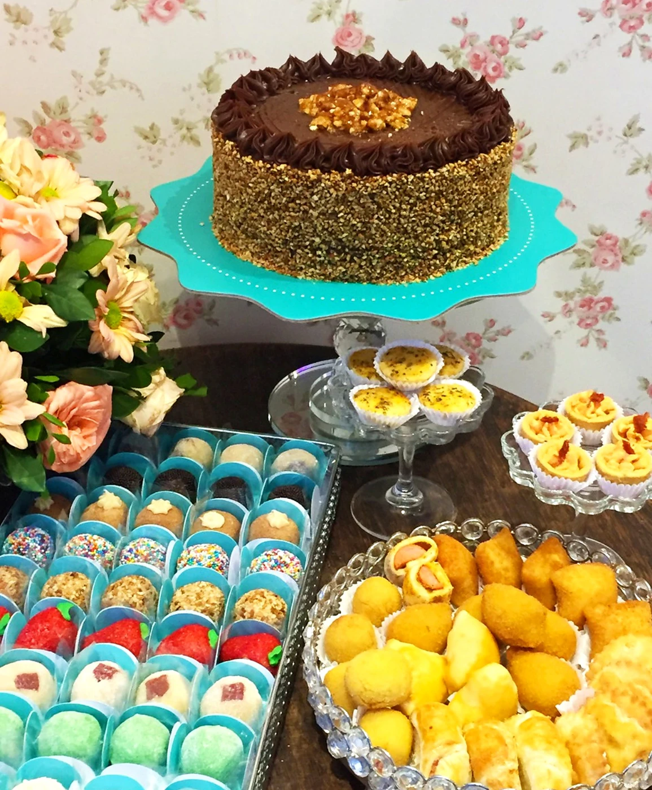
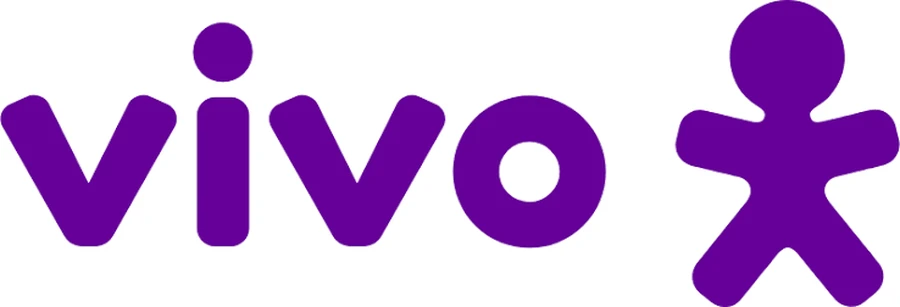
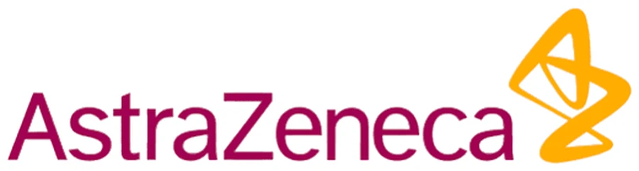
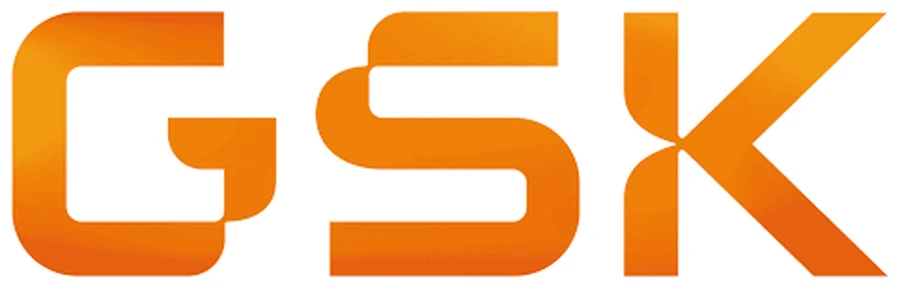
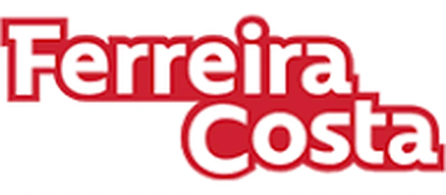
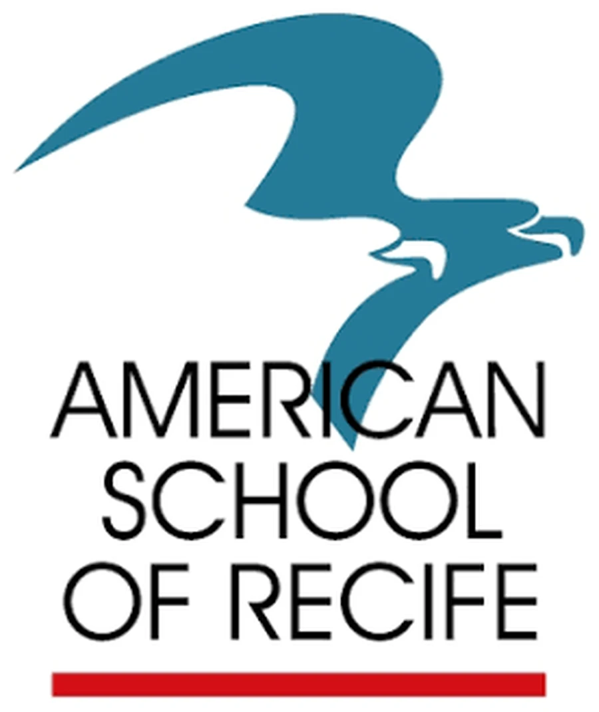
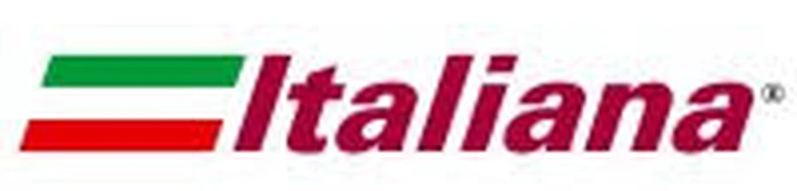

Experiência
comprovada
Mais de 10 anos de mercado, com licenças e certificações sanitárias que garantem segurança e regularidade.

PORTFÓLIO COMERCIAL 2026
Catering e alimentação para eventos corporativos e celebrações do dia a dia. Do coffee break ao jantar de gala, o mesmo cuidado em cada bandeja.
01 · QUEM SOMOS
Há mais de uma década, o Buffet Doce de Comer transforma eventos corporativos em experiências que valorizam a imagem da sua empresa e encantam seus convidados. Unimos o rigor do mundo corporativo à paixão pela gastronomia, com soluções completas do início ao fim.
Cada evento pede um formato próprio, e por isso a versatilidade é a nossa assinatura. Atendemos desde coffee breaks e serviços volantes com finger foods modernos, ideais para coquetéis e networking, até almoços e jantares completos, em buffet tradicional ou à la carte, sempre sob medida.

02 · QUEM ESTÁ À FRENTE
PROPRIETÁRIA · CHEF DE COZINHA
Administradora e gastronoma de formação, Luciana reúne a visão de gestão de quem entende o mundo empresarial e a criatividade de uma cozinha profissional. À frente da Doce de Comer, cuida pessoalmente para que cada evento tenha sabor, organização e segurança.
FORMAÇÃO
Unir a visão de gestão à paixão pela cozinha é o que me permite entregar sabor e segurança em cada evento.
03 · NOSSOS DIFERENCIAIS
Mais de 10 anos de mercado, com licenças e certificações sanitárias que garantem segurança e regularidade.
Sofisticação visual e sabor marcante, do coffee break ao jantar.
Soluções sob medida para o perfil e o tamanho do evento, com opções veganas adaptadas sob consulta e atenção a prazos apertados.
Da logística à equipe uniformizada, cuidamos de cada detalhe para você focar no que importa: os negócios.
04 · NOSSOS SERVIÇOS
Prático, pontual e saboroso. Ideal para reuniões, treinamentos, workshops e recepções.
Refeições completas e equilibradas para equipes e eventos de qualquer porte.
Menus elaborados para jantares, premiações e encerramentos de ano.
Projetos sob medida: cardápio e formato pensados para a sua necessidade.
Do coffee break ao jantar de gala: o mesmo cuidado em cada bandeja.
05 · CELEBRAÇÕES DO DIA A DIA
Aniversariantes do mês, entrega de resultados, comemorações da equipe: kits de doces, salgados e tortas para celebrar no dia a dia, sem trabalho para quem organiza.

06 · CARDÁPIOS EM DESTAQUE
07 · QUEM CONFIA EM NÓS






Empresas de diferentes segmentos que confiam na Doce de Comer para os seus eventos.
08 · COMO FUNCIONA
Entendemos o tipo de evento, o público, a data e o orçamento disponível.
Enviamos um cardápio e uma proposta sob medida, com clareza de valores.
Preparamos e entregamos tudo com pontualidade e rigor sanitário.
Acompanhamos sua avaliação para manter o padrão a cada novo evento.
VAMOS CONVERSAR?